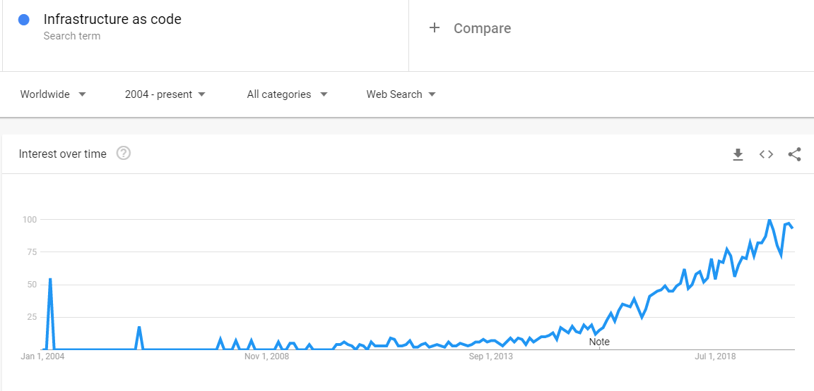
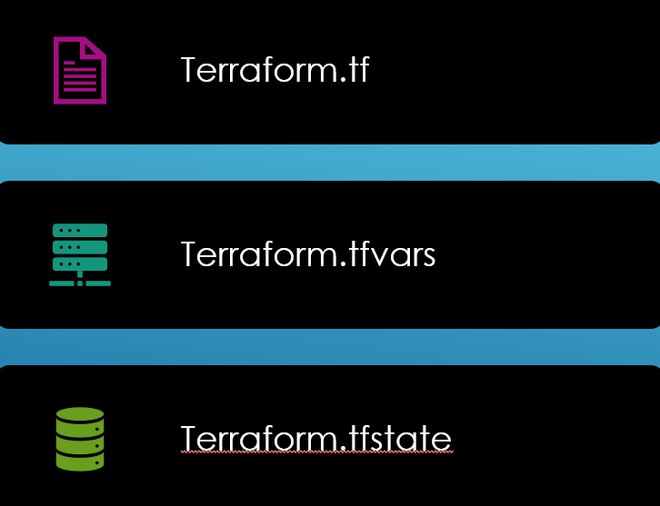
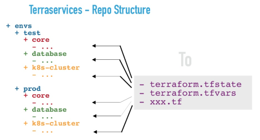

Infrastructure as Code
using

Agenda
- IaC overview
- Terraform basics
- Provisioning demo on Azure and AWS
- Case studies
- Best practices
What is IaC?
Infrastructure as Code (IaC) is a method to provision and manage IT infrastructure using source code, rather than through standard operating procedures and manual processes.Why IaC?
- Lower costs
- Increase productivity
- Consistency
- Code your single source of truth
- Little to NO documentation
- Taking the CICD journey to next level
- Manage IT infrastructure for the age of cloud and microservices.
Why IaC?
How?
- ARM Templates
- AWS CloudFormation
- Google Cloud Deployment Manager
- Alibaba Cloud Resource Orchestration Service(ROS)
- Ansible playbooks
- Chef, Puppet, Saltstack etc.
- Terraform
What is Terraform?
- Terraform is the first multi-cloud immutable infrastructure tool that was introduced to the world by HashiCorp, released three years ago, and written in Go.
- Hashicorp Coorporation Language(HCL) Json like, but human friendly
- Imperative vs Declarative programming
Why Terraform?
Terraform Basics and Workflow
-

Provider, Backend, Resource
- Never take a POC setup and evolve it into production setup without necessarily thinking about splitting things up.
Terraform Key Concepts
- Configuration Management
- State Management
- Secret Management
Taking game to next level
- TerraMod
- Terraservices
- 
The Pain
schibsted.pl/blog/9-reasons-why-terraform-is-a-pain-and-1-why-you-should-still-care/What next?
- Linting
- Unit Testing using Terratest
- Availability testing
- Approval workflow
- Envision IaC in one-click CICD pipeline
Recap
No right solution fits all. There is no right or wrong way of doing things. Agenda was to highlight key pointers that empowers you to make better decisions.

Thank you, Ankit